くろうさ館長と仲間たち
セキマコトの小さな美術館では、くろうさたちがいろいろな場所を案内します。
本を紹介したり、点描を描いたり、おたよりを届けたり。 それぞれのくろうさに、小さな役割があります。
図鑑

ようこそくろうさ
美術館の入口担当

ありがとうくろうさ
お礼・締めのごあいさつ

おたよりくろうさ
Contact担当

えんぴつくろうさ
制作・下描き担当

カメラくろうさ
撮影・制作記録担当

おすすめくろうさ
おすすめ作品担当
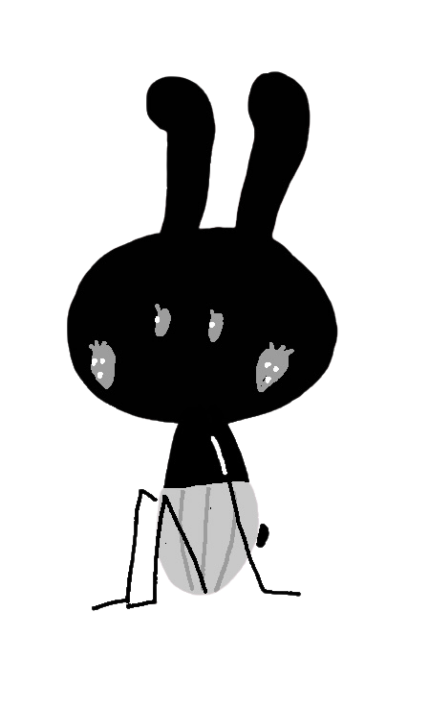
ちょこんくろうさ
余白・休憩担当
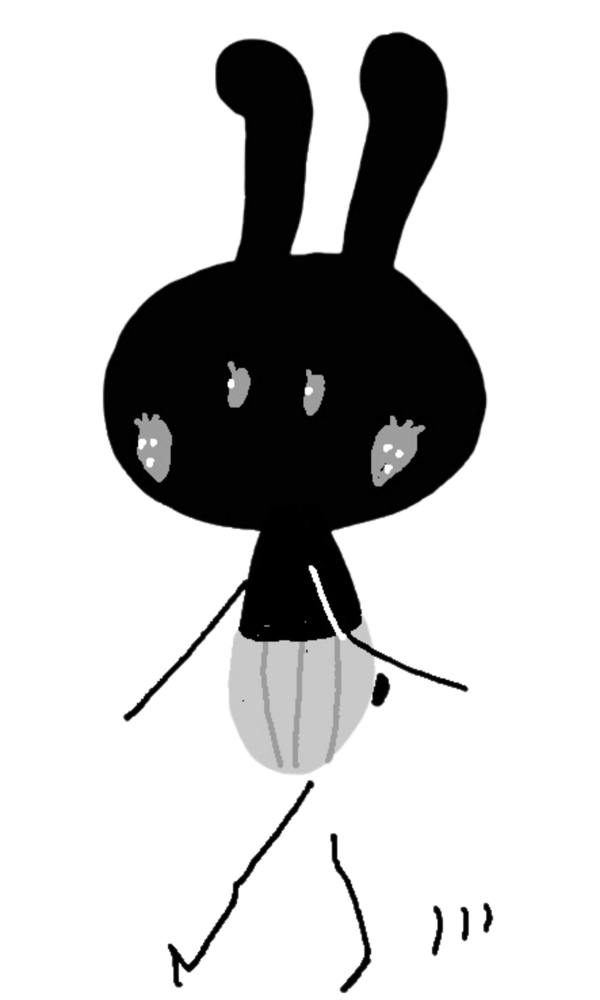
おさんぽくろうさ
館内案内担当
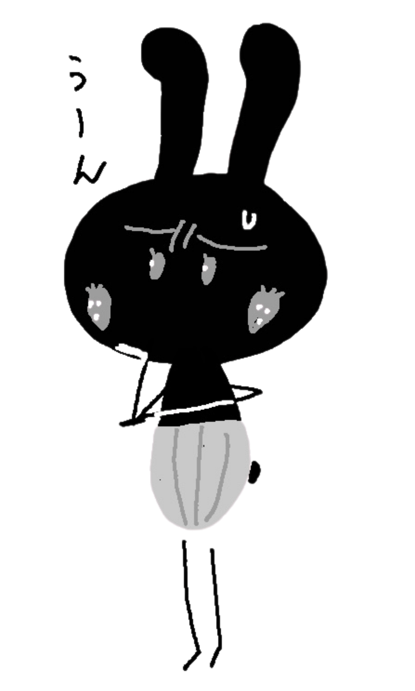
考え中くろうさ
アイデア・考えごと担当
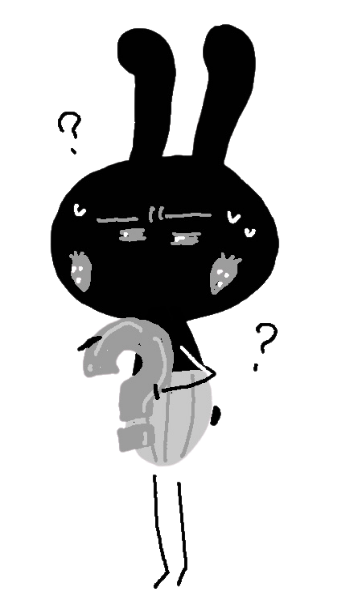
はてなくろうさ
困った時・案内担当
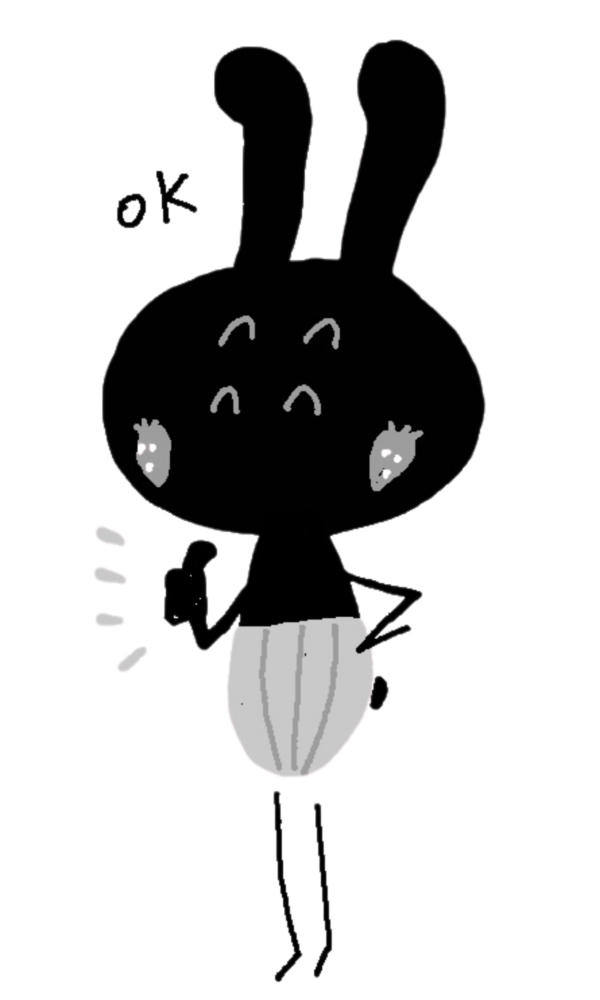
OKくろうさ
確認・完了担当
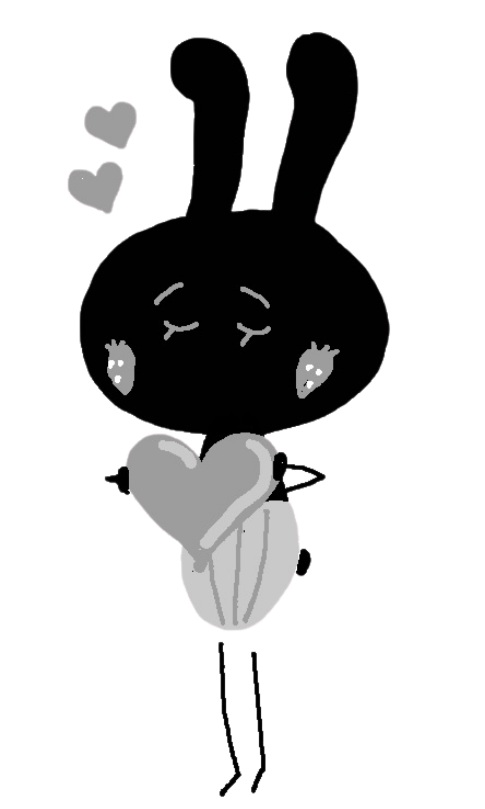
ハートくろうさ
やさしい気持ち担当
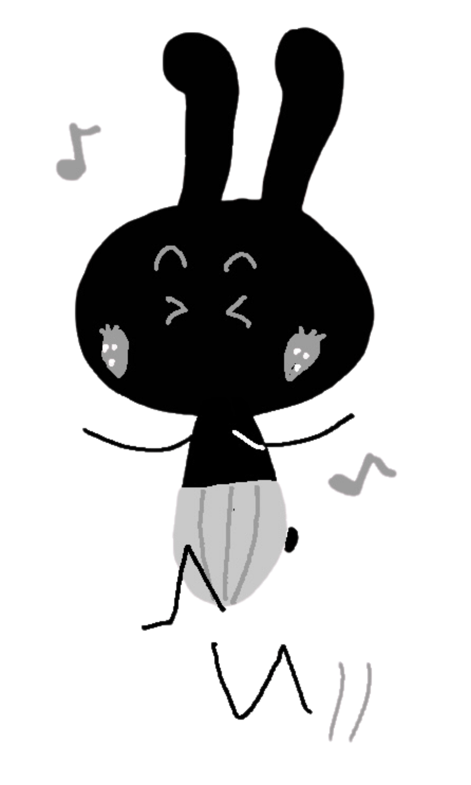
音楽くろうさ
ごきげん担当
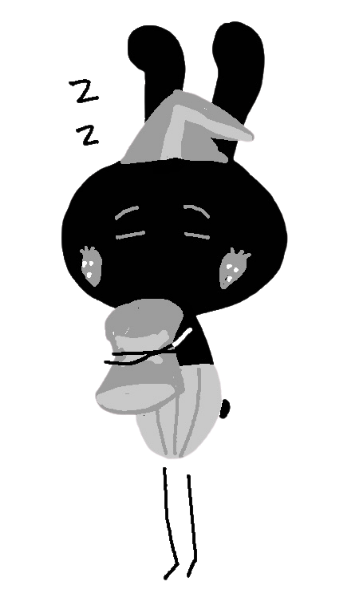
おやすみくろうさ
夜・おやすみ担当

コーヒーくろうさ
休憩・アトリエ便り担当
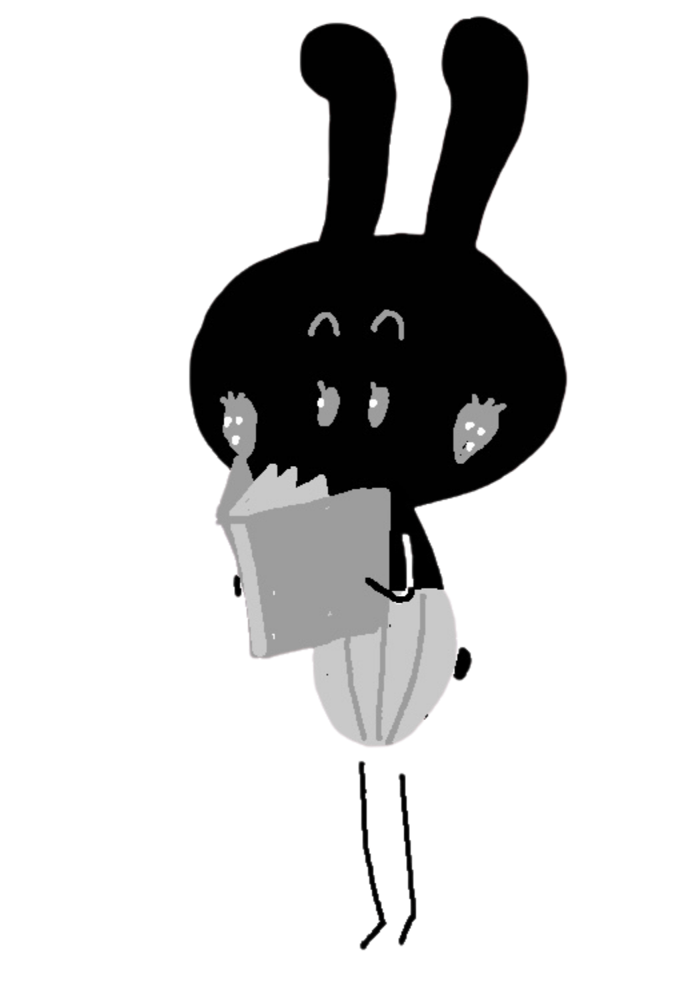
読書くろうさ
本を読む担当
本紹介くろうさ
Books担当

おじぎくろうさ
ごあいさつ担当

点描くろうさ
点描画教室担当
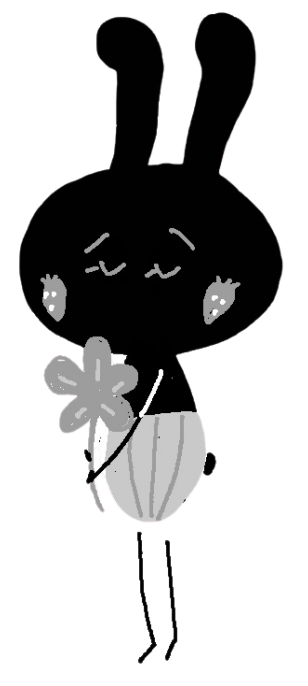
お花くろうさ
花・季節展示担当

ギフトくろうさ
Downloads担当
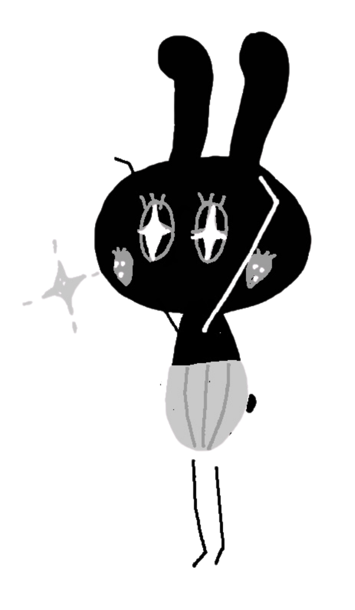
よろこびくろうさ
うれしいお知らせ担当
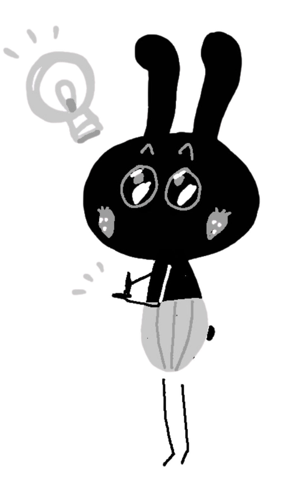
ひらめきくろうさ
アイデア担当

絵描きくろうさ
制作室担当
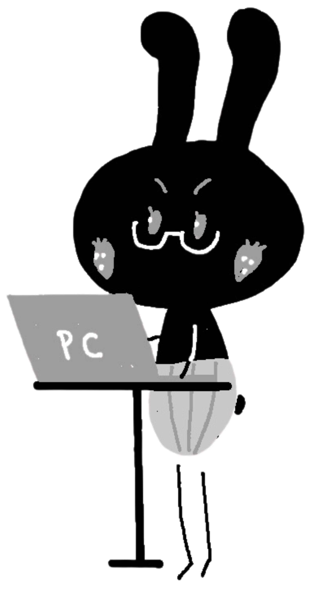
パソコンくろうさ
ホームページ・更新担当